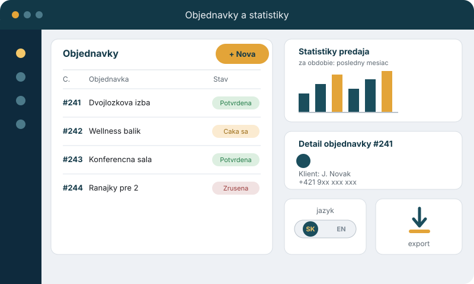

Ako reálne pracujem
Namiesto skutočného projektu ukazujem zjednodušenú ilustráciu systému na správu objednávok a štatistík — podobného tomu, aký poznám z hotelovej recepcie. Najeďte myšou, kliknite alebo sa po jednotlivých častiach pohybujte klávesnicou (Tab a šípky) a dozviete sa viac.
Systém, ktorý poznám z recepcie

Čo je na ilustrácii
- Nová objednávka
- Novú rezerváciu zaevidujem jedným klikom, presne ako v reálnom PMS na recepcii.
- Zoznam objednávok
- Prehľad všetkých rezervácií a ich stavu — potvrdené, čakajúce aj zrušené.
- Štatistiky predaja
- Vývoj predaja za vybrané obdobie viem prehľadne zobraziť v grafe.
- Detail objednávky
- Ku každej objednávke dohľadám klienta a rýchlo mu zavolám alebo napíšem.
- Jazyk rozhrania
- Rozhranie prepínam medzi slovenčinou a angličtinou podľa potreby klienta.
- Export štatistík
- Prehľad predaja sa dá jedným klikom stiahnuť a poslať ďalej.